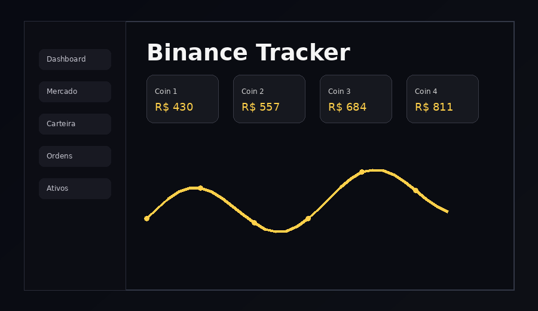
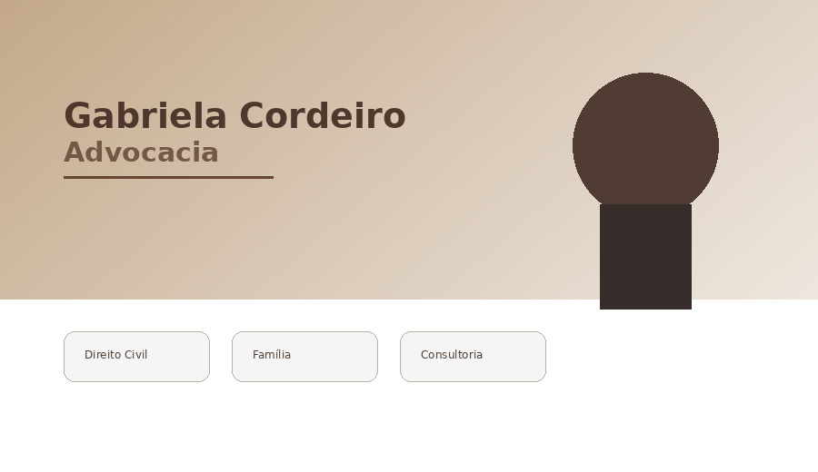
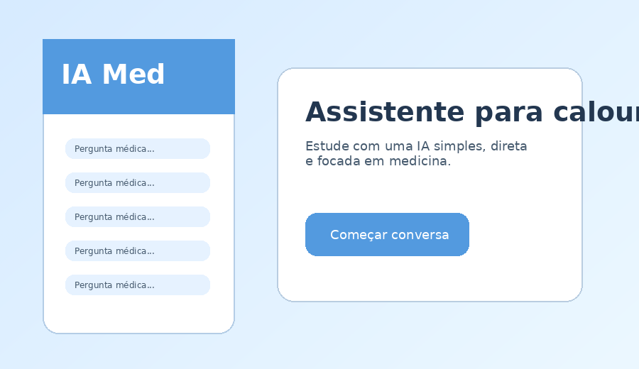
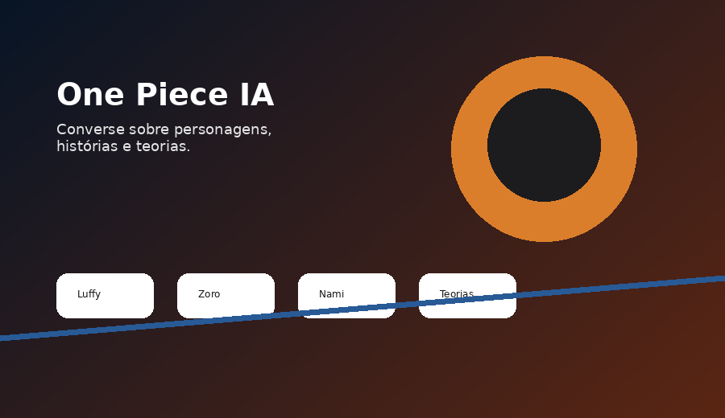
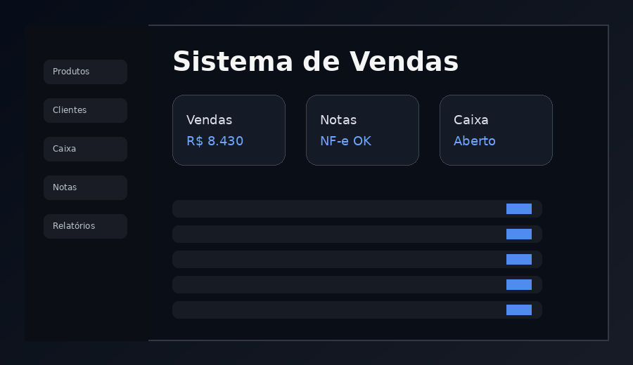

Binance Tracker
Site de criptomoedas que permite acompanhar preço, gráficos e informações do mercado em tempo real.
Desenvolvedor Full Stack
Alguns dos projetos que desenvolvi com foco em qualidade, performance, tecnologia e resultados.

Site de criptomoedas que permite acompanhar preço, gráficos e informações do mercado em tempo real.

Site institucional para advogada com apresentação de serviços, blog e formulário de contato.

Inteligência artificial para auxiliar calouros de medicina com dúvidas, conteúdos e resumos.

IA que conversa sobre o universo de One Piece, personagens, histórias e muito mais.

Sistema completo de vendas com gestão de produtos, clientes, pedidos e emissão de notas fiscais.
Vamos conversar sobre como posso ajudar no seu projeto.